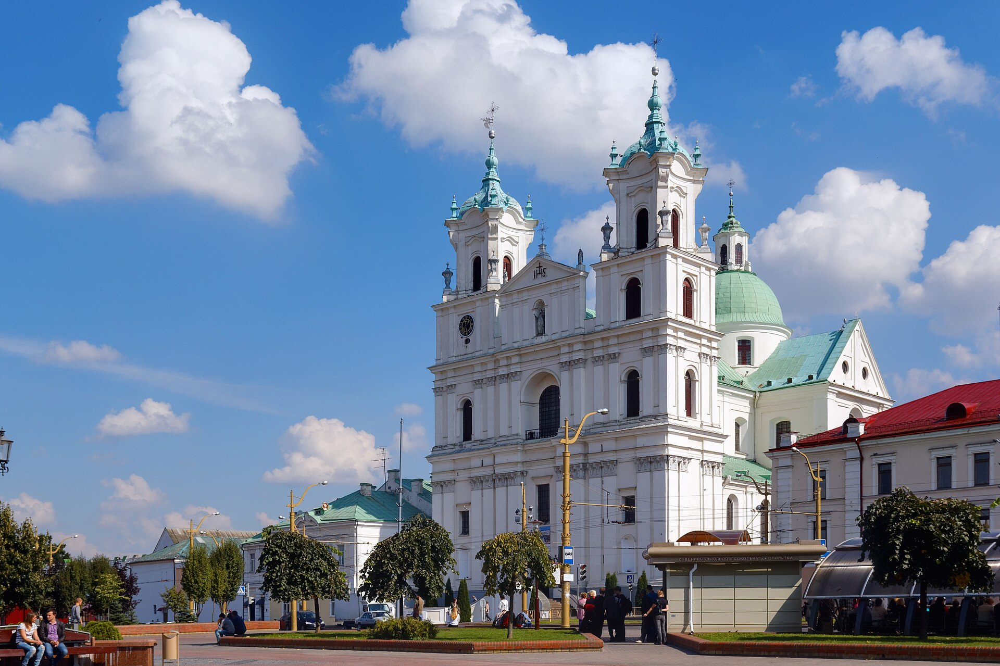

Путеводитель по Беларуси
Истории,
которые рядом.
Шесть мест, в которых оживают города. Архитектура, память и характер Беларуси — в одном маршруте.
Исследовать места ↓✳ Короткий путь к большой истории

Гродно · 01 из 06Город начинается с его историй↗53°40′ N 23°50′ EМаршрут начинается здесь
У каждого города
есть свой символ.
Мы собрали шесть достопримечательностей из списка и дополнили его историей, деталями архитектуры и подсказками для прогулки. Выберите город и загляните внутрь каждой истории.
06достопримечательностей
06городов Беларуси
∞поводов отправиться в путь
Откройте карту
Шесть точек.
Одна страна.
Нажмите на маркер, чтобы увидеть достопримечательность и перейти к её истории. Карту можно двигать и приближать.
Нашли неточность на карте? ↗ИНТЕРАКТИВНАЯ КАРТА · OPENSTREETMAP
Выберите направление
Места с характером
Путешествуйте по одному городу
или соберите свой маршрут.
Ничего не найдено. Попробуйте другое название или город.
Б
Y
Y
Отправляйтесь без спешки